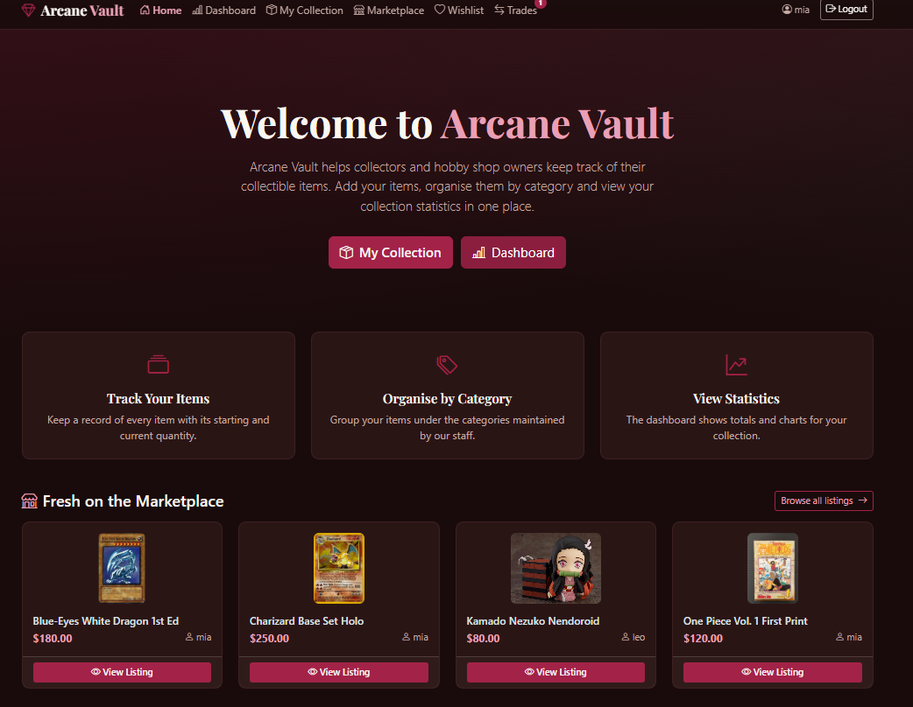
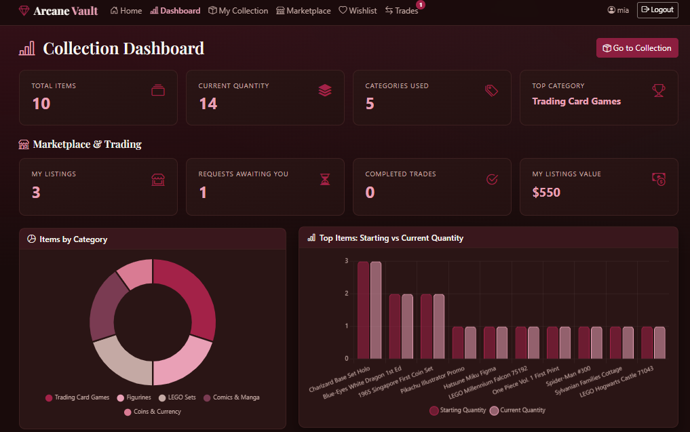
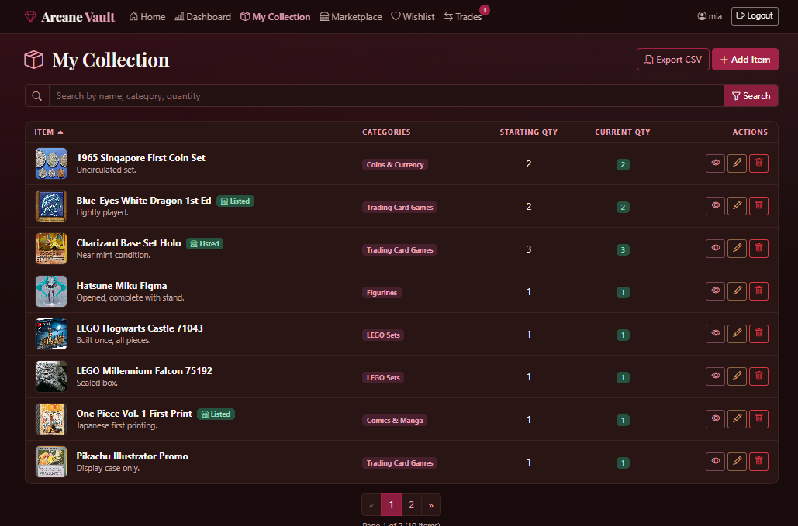
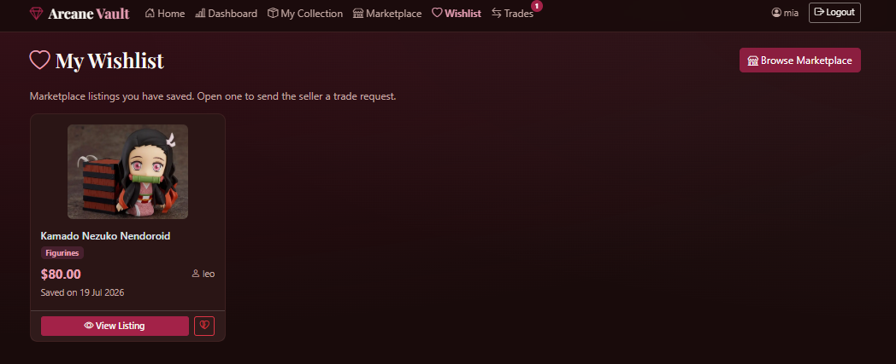
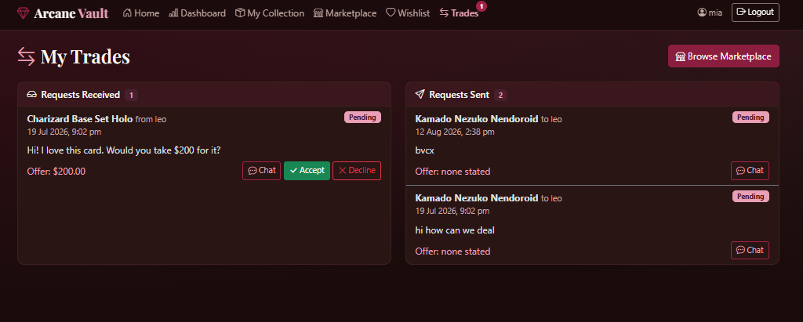
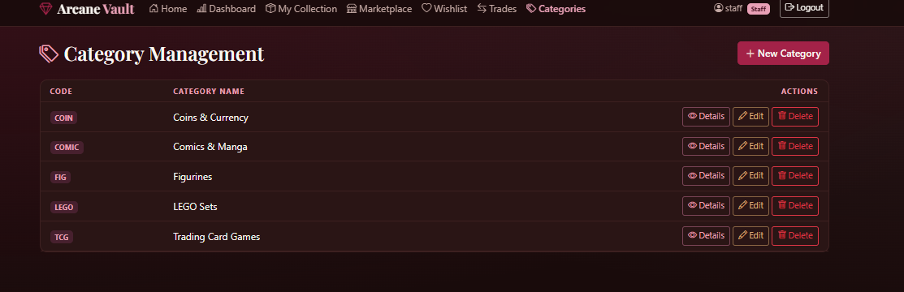

eBusiness application development
Arcane Vault
A collector platform that brings collection management, marketplace discovery, and trade requests together, with an analytics dashboard to make collection data easier to understand.

The marketplace connects a collector’s items with browsing, wishlists, and trade requests.
From a collection tracker to a marketplace
The assignment began with a collection-management prototype for collectors and hobby shop owners. Users needed account access and a searchable collection with add, view, update, and remove actions. Staff also needed to maintain the shared category list.
I extended this foundation with a Collector Marketplace & Trading Suite. The idea was to help collectors discover one another’s items, save interesting listings, send offers, and manage trade requests from the same application.
What I worked on
- Application layers: developed the collector interface with ASP.NET Core Razor Pages and connected it to ASP.NET Core Web API.
- Data model: used Entity Framework Core and SQLite for users, roles, collection items, categories, and item-category relationships.
- Collection workflows: implemented searchable item records, starting and current quantities, item actions, pagination, and CSV export.
- Staff tools: built category management with create, view, edit, and delete actions, alongside role-specific navigation.
- Additional features: worked on marketplace listings, saved listings, trade requests, and a collection analytics dashboard.
The marketplace and trading extension
- Marketplace listings: present items with photos, asking prices, categories, sellers, and available quantities. Search helps collectors narrow down the listings.
- Personal wishlist: save an interesting listing, return to its details, or remove it when it is no longer relevant.
- Trade requests: show received and sent requests separately, with offer details, pending status, and accept or decline actions.
- Negotiation and notifications: connect chat to a trade request and surface pending activity in the navigation. Trade-specific conversations, unread-message tracking, and background notification polling were part of the feature design.
Keeping quantities consistent: the trade-acceptance flow was designed to deduct one unit from the seller’s collection and add it to the buyer’s collection. Updating both sides was a key requirement of the trading extension.
Making collection data useful
The dashboard combines totals and charts in one view: item count, current quantity, categories used, and the most represented category. Marketplace summaries show listings, requests awaiting a response, completed trades, and listing value.
A category breakdown and a starting-versus-current quantity chart help collectors see the shape of their collection. CSV export gives them another way to use their collection records.
What I learned
- Connect a page-based interface, API endpoints, and a relational database in a full-stack .NET application.
- Translate user and staff responsibilities into navigation and management workflows.
- Design connected features around the whole collector journey, from organizing items to reviewing a trade.
- Treat quantity consistency and clear request states as part of the feature design.
- Use charts and summaries to turn collection records into an easier-to-read overview.
A closer look at the application
Open a screenshot to view the details.


View larger

View larger

View largerView larger 

View larger

View larger

View larger